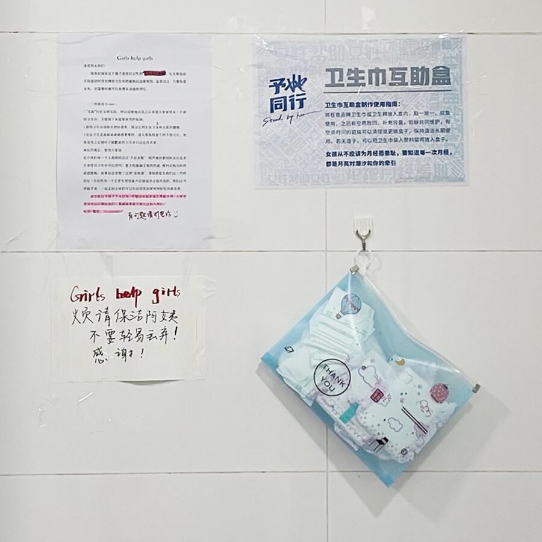
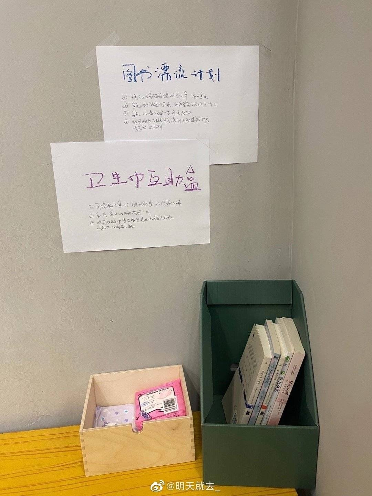
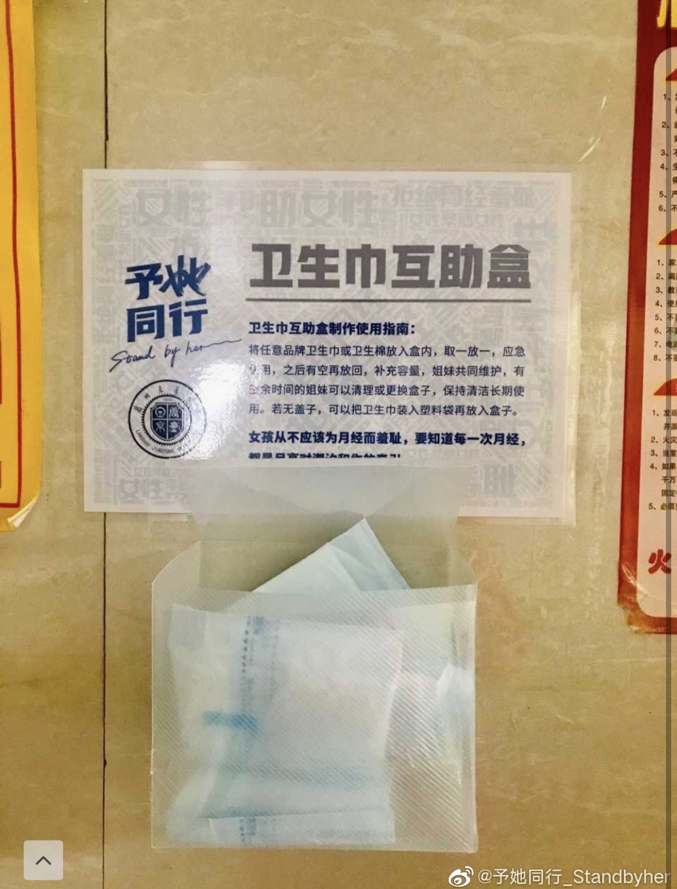
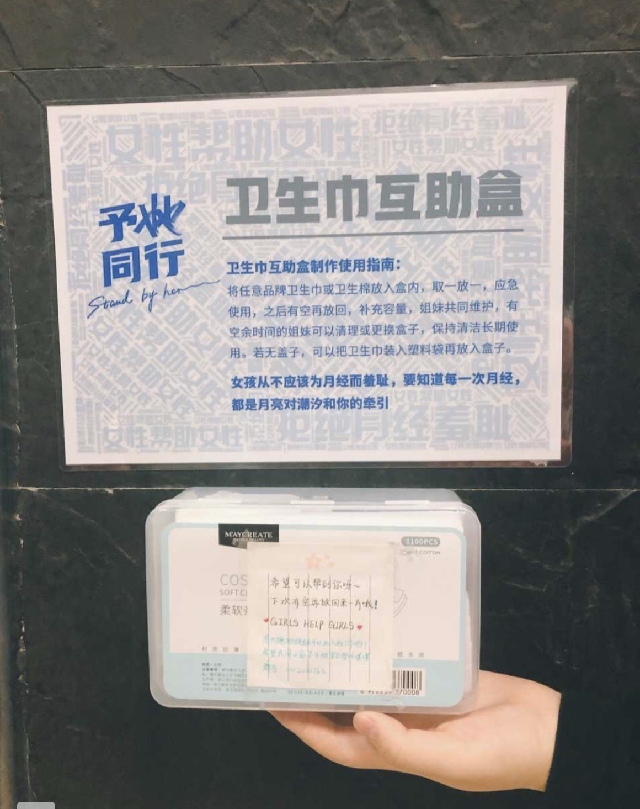
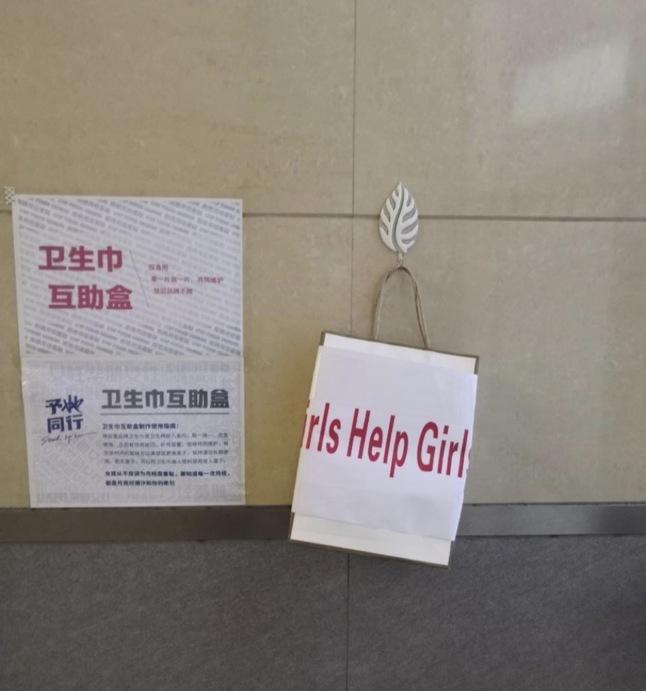

In the summer of 2020, period poverty came under renewed scrutiny in China
because cheap, unbranded pads that were not individually wrapped were put up
for sale by an unidentified seller on an e-commerce platform. Some people
questioned why anyone might buy such potentially unsanitary pads. Two online
buyers suggested they had purchased the supplies because they could not afford
more expensive products.
This image is a screenshot of package-free sanitary napkins, on which buyers commented, “Life is difficult” (image: Taobao)
This image is a screenshot of package-free sanitary napkins, on which buyers commented, “Life is difficult” (image: Taobao)

Inspired by the campaign of raising awareness regarding menstrual health and
period poverty, Chinese students have launched a program setting up free
sanitary pad dispensers in toilets at universities across the country in a
bid to end period shaming of young women. In China, female students still
felt embarrassed when buying sanitary products. Shop owners of convenience
stores often provide black plastic bags as a sign of "care" when female
customers buy sanitary pads.
“Sanitary pad support boxes” have been set up in almost 500 campuses, all by female student volunteers who volunteered to help those in need and end the shame when talking about menstruation, a norml physiological that women undergo. Those who take from the period support boxes are encouraged to help replenish its stock later.
The pads were part of a broader effort to increase access to a product that not all students can afford, and to strip away the shame surrounding a natural bodily function that has long been stigmatized. There were also donation made to support young girls living in rural areas of China, as sanitary products are nearly "luxurious" for them
“Sanitary pad support boxes” have been set up in almost 500 campuses, all by female student volunteers who volunteered to help those in need and end the shame when talking about menstruation, a norml physiological that women undergo. Those who take from the period support boxes are encouraged to help replenish its stock later.
The pads were part of a broader effort to increase access to a product that not all students can afford, and to strip away the shame surrounding a natural bodily function that has long been stigmatized. There were also donation made to support young girls living in rural areas of China, as sanitary products are nearly "luxurious" for them




Boxes with free sanitary product installed in universities